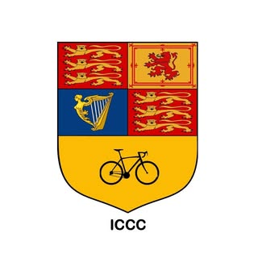
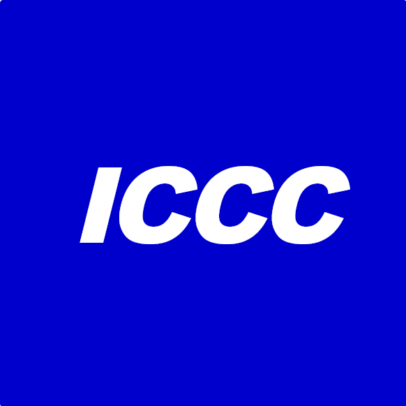
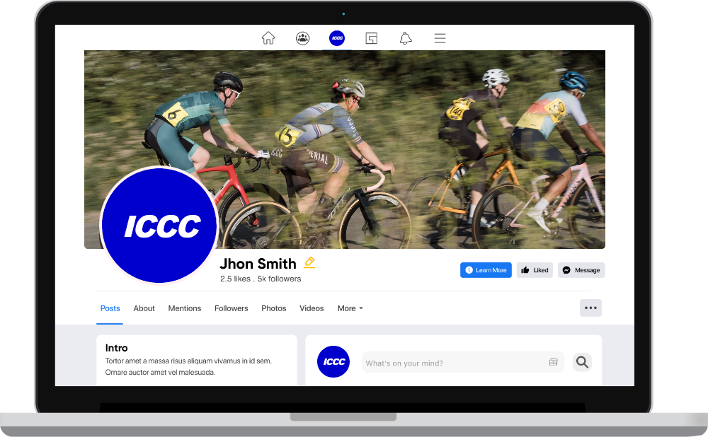
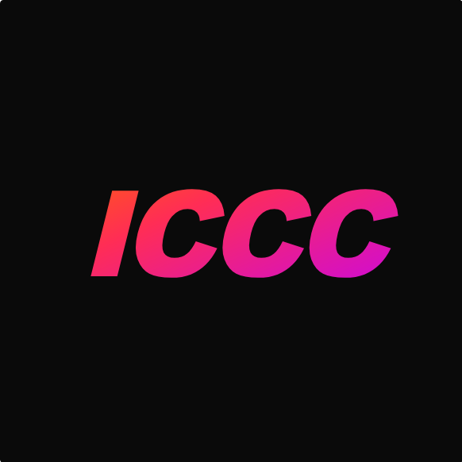
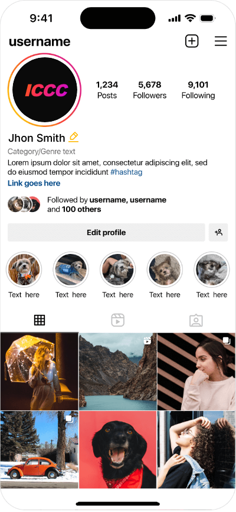
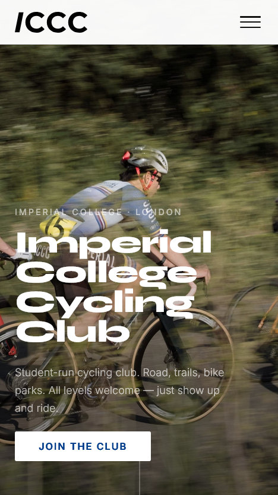

ICCC has new logos. Here’s why.
The Old Logo
The old logo was a coat of arms — lions, a harp, a bicycle tucked into the bottom half. Heraldic, traditional, unmistakably British. It also looked like it belonged on a university crest from 1895, which is fine for a university, less so for a student cycling club trying to attract members in 2026.

The problem wasn’t that it was ugly. It just communicated the wrong things. Formal. Closed. Hard to reproduce at small sizes. Invisible on a dark background.
The New Logos
There are now two versions, depending on context.
The wordmark — used on the website — is /ICCC in Montserrat. Clean, modern, works at any size. The slash is a small reference to the fact that this is a club built and run by people at a tech University and makes it more dynamic.
The social media mark — used on Instagram and LinkedIn — is ICCC in Arial Black italic. Two versions: one in Imperial Blue, one with a more dynamic gradient treatment. Italic because a static logo on a profile picture needs a little momentum.




